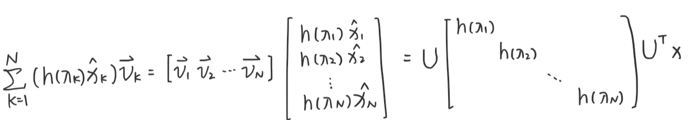

GCN里没有卷积，我怎么会做这样的梦
图卷积神经网络主要有两类，一类是基于**空域（Spatial）的，另一类则是基于频域（Spectral）**的。基于频域卷积的方法从图信号处理起家，因此它非常的理论、非常的数学。
图信号
图信号处理是离散信号处理在图信号领域的应用。
一个单通道图信号f=[3,5,-2,1,-5]^T的例子：

图信号向量依托于图G={V,E,W}，其中V={A,B,C,D,E}为节点集合，E=AB,AC,BD,CD,DE,BE为边集合，W为图的邻接矩阵。
\begin{equation*}
W=\left[
\begin{matrix}
0 & 5 & 3 & 0& 0\\
5 & 0 & 0 & 7 & 2\\
3 & 0 & 0 & 1 & 0\\
0 & 7 & 1 & 0 & 4\\
0 & 2 & 0 & 4 & 0\\
\end{matrix}
\right]
\end{equation*}
图信号也可以看做是图函数。例如在上面的例子中，可以看做是节点域向实数域的映射γ:V→R，即每一个节点对应一个实数值。
上面的例子的图信号只有一个通道。在多属性的图中，图信号的通道不只有一个。对于多通道的图信号表示如下：
X∈Rn×k
其中，n为图节点数，k为每个节点的信号通道数。图信号矩阵X的每一行表示一个节点上的信号。
傅里叶变换
曾经，我在信号与系统课上与傅里叶变换邂逅，现在却仿佛初见。真好啊傅里叶变换，每次看到你都是你最美的样子。
正弦波逐渐变得离谱
傅里叶曾经说过：“任何波形都能用不同频率的正弦波（频率分量）叠加起来得到。”（并没有说过）
最经典的傅里叶变换图说明，任何波形都可以由不同频率分量构成，它们在时间方向呈现时域波形，而在频率方向以离散的频谱形式呈现：

因此，在信号处理中，时域中复杂的曲线，可以将其转化到频域来分解，取出一些特定的频率成分，这就是滤波。
欧拉欧拉欧拉欧拉
"这里有一条数轴，在数轴上有一个红色的线段，它的长度是1。当它乘以3的时候，它的长度发生了变化，变成了蓝色的线段，而当它乘以-1的时候，就变成了绿色的线段，或者说线段在数轴上围绕原点旋转了180度。

我们知道乘-1其实就是乘了两次 i使线段旋转了180度，那么乘一次 i 呢——答案很简单——旋转了90度。同时，我们获得了一个垂直的虚数轴。实数轴与虚数轴共同构成了一个复数的平面，也称复平面。这样我们就了解到，乘虚数i的一个功能——旋转。"

通过对复平面的引入，现在来看著名的欧拉公式：
eix=cosx+isinx
欧拉公式描绘了一个随着时间变化，在复平面上做圆周运动的点。随着时间的改变，这个点的运动轨迹在时间轴上成了一条螺旋线。这条螺旋线在实数部分的投影是cos(t)，在虚数部分的投影是sin(t)。
所以，正弦波的叠加，可以理解成螺旋线的叠加在实数空间的投影。
欧拉函数还有一些变形：
eit=cost+isinte−it=cost−isint
欧拉函数和傅里叶变换有密切的关系，但现在在这里不展开。具体可以见参考文献。
傅里叶变换
傅里叶变换是将函数f(t)拆解成无数个不同频率正弦波之和的过程。傅里叶变换公式如下：
F(w)=2π1∫−∞∞f(t)e−iwtdx
其中，F(w)表示角频率为w的波的系数。
傅里叶变换也可以看做，函数f(t)向基函数e−iwt投影，F(w)就表示w对应基上的坐标。而这个基e−iwt恰好是拉普拉斯算子的特征向量。
图傅里叶变换
傅里叶变换的本质是把任意一个函数表示成了若干个正交基函数的线性组合。对于图上的信号x∈Rn，如果要进行一个傅里叶变换，那么也需要我们找到一组正交基，通过这组正交基的线性组合来表示x。
拉普拉斯算子
**梯度（矢量）：**梯度“∇”的本意是一个向量（矢量），表示某一函数在该点处的方向导数沿着该方向取得最大值，即函数在该方向处沿着该方向（此梯度方向）变化最快，变化率最大（为该梯度的模）。假设一个三元函数u=f(x,y,z)在空间区域G内具有一阶连续偏导数，点P(x,y,z)∈G，称向量
{∂x∂f,∂y∂f,∂z∂f}=∂x∂fi^+∂y∂fj^+∂z∂fk^
为函数u=f(x,y,z)在点P处的梯度，记为grad f(x,y,z)或∇f(x,y,z)。
其中，∇=∂x∂fi^+∂y∂fj^+∂z∂fk^ 称为（三维）向量的微分算子或Nabla算子。
散度（标量）：散度“∇⋅”（divergence）可用于表示空间中各点矢量常发散的强弱程度。物理上，散度的意义是场的有源性。当div(F)>0，表示该点有散发通量的正源（发散源）；当div(F)<0表示该点有吸收能量的负源（洞或汇）；当div(F)=0，表示该点无源。
一个n元函数的拉普拉斯算子定义为函数梯度∇f的散度∇⋅，即
Δf=∇2f=i=1∑n∂xi2∂2f
例如，一个二元函数f(x,y)的拉普拉斯算子为：
Δf=∂x2∂2f+∂y2∂2f
将拉普拉斯算子作用在之前说的基函数e−iwt上，有
Δeiwt=∂t2∂2e−iwt=−w2e−iwt
根据广义特征方程Ax=λx， e−iwt就是拉普拉斯算子的特征向量。
图拉普拉斯矩阵
对于一个图，邻接矩阵是W，邻接矩阵对角元素都为0；度矩阵D是对角矩阵，对角元是每个节点的度（邻接矩阵每行非0元素的个数）。则拉普拉斯矩阵定义如下：
L=D−W
对于图来说，拉普拉斯矩阵就是图上的拉普拉斯算子，或者说离散的拉普拉斯算子。
说明如下：
我们考虑离散拉普拉斯算子。离散函数的导数如下所示：
\frac{\partial f}{\partial x} &= f'(x)=f(x+1)-f(x)\\
\frac{\partial ^2 f}{\partial x^2}&=f''(x)\approx f'(x)-f'(x-1)\\
&=f(x+1)+f(x-1)-2f(x)
则二维离散情况下的拉普拉斯算子为：
Δf=∂x2∂2f+∂y2∂2f=f(x+1,y)+f(x−1,y)−2f(x,y)+f(x,y+1)+f(x,y−1)−2(x,y)=f(x+1,y)+f(x−1,y)+f(x,y+1)+f(x,y−1)−4(x,y)
画成二维图是这样的：
拉普拉斯算子计算了周围点与中心的梯度差。直观来说，当f(x,y)受到扰动之后，其可能变为相邻的f(x+1,y),f(x−1,y),f(x,y+1),f(x,y−1)之一，拉普拉斯算子得到的是对该点进行微小扰动后可能获得的总增益（或者说是总变化）。
现在将这个结论推广到图：对于一个图来说，假设图有N个节点，则以上f函数不再是二维，而是N维向量f=(f1,f2,⋯,fn)，其中fi表示f在图中节点i处的函数值。不同于普通的离散函数，对图上第i处的节点进行微小扰动时，它可能变为任意一个与它相邻的节点j∈Ni，Ni表示节点i的一阶邻域节点。
我们已经知道，拉普拉斯算子能够计算对一个点进行微小扰动后到它所有自由度上可能获得的总增益。那么通过图来表示，拉普拉斯算子就是任意一个节点j变化到节点i所带来的增益。假设图中边的权重均为1，则有：
Δfi=j∈Ni∑(fi−fj)
而如果边Eij具有权重wij时，则有：
Δfi=j∈Ni∑wij(fi−fj)
由于wij=0可以表示节点i,j不相邻，所以上式可以简化并推导为：
Δfi=j∈N∑wij(fi−fj)=j∈N∑wijfi−j∈N∑wijfj
此时，前面的项正好为顶点i度的定义di=∑j∈Nwij，而后面一项可以展开后用向量内积表示：
j∈N∑wijfj=wi1f1+wi2f2+...+wiNfN=wi:f
其中wi:=(wi1,...,wiN)是N维行向量，f=(f1,...,fN)T是N维的列向量，wi:f表示两者的内积。
从而，节点i受到微小扰动的增益为:
Δfi=difi−wi:f
因此，对于图上所有N个节点有：
即，Δf=(D−W)f=Lf，这个东西就是拉普拉斯矩阵！
根据前面所述，拉普拉斯矩阵中的第i行实际上反映了第i个节点在对其他所有节点产生扰动时所产生的增益累计。直观上来讲，图拉普拉斯反映了我们在节点i上施加一个势，这个势以哪个方向能够多顺畅地流向其他节点。谱聚类中的拉普拉斯矩阵可以理解为是对图的一种矩阵表示形式。
实际上图拉普拉斯矩阵是一个差分算子，第i行只与第i个图节点及其一阶邻居有关。由此可知，拉普拉斯矩阵是一个反映图信号局部平滑度的算子。
注意以下几点
- 从拉普拉斯算子的角度来看，f是一个函数，只能取i个值；而从拉普拉斯矩阵的角度来看，f是一个向量。从图的角度来看，f叫图信号，这个网络有n个节点，假设每个节点都有一些属性，例如一个社交网络，每个节点是一个人，人就会有性别、年龄等属性；那么所有人的年龄就是一个图信号。
- 离散拉普拉斯算子可以定义在图或者离散网格上，这是分别定义的。上文通过连续拉普拉斯算子，引出离散，再引出图拉普拉斯算子，相当于建立三者之间的关联，只是为了帮助理解。其实有的地方是解释不通的，比如说拉普拉斯算子是扰动后的总增益，那应该用扰动后的减去扰动前的，而图拉普拉斯定义中，却是用扰动前（中心节点）减去扰动后（邻居节点）。
图傅里叶变换
由于在图中，拉普拉斯算子与拉普拉斯矩阵有相同的作用，所以我们可以用拉普拉斯矩阵的特征向量作为图傅里叶投影的基。（傅里叶变换中拉普拉斯算子的特征向量<==>图傅里叶变换中拉普拉斯矩阵的特征向量）
设拉普拉斯矩阵可以进行如下特征分解：
L=UΛUT
其中，U为拉普拉斯矩阵的特征向量：U=(v1,v2,...,vn)；Λ是一个对角矩阵，对角元是L的特征值。
使用拉普拉斯矩阵的特征向量作为基函数，则图傅里叶反变换可以表示为：
x=x^(λ1)v1+x^(λ2)v2+...+x^(λn)vnx=l=1∑nx^(λl)vl
矩阵形式为：x=Ux^。
类似的，可以得到图傅里叶正变换：
x^(λl)=<x,vi>=i=1∑nx(i)vix^=UTx
图傅里叶变换中的λi可以视为图信号的频率，x^(λi)可以视为分量的振幅。
傅里叶系数等价成图信号在对应频率分量上的幅值，反映了图信号在该频率分量上的强度，图信号在低频分量上的强度越大，该信号的平滑程度就越高；图信号在高频分量上的强度越大，该信号平滑度就越低。 把所有的傅里叶系数合在⼀起称为该信号的频谱（spectrum），这种描述既考虑了图信号本身值的大小，也考虑了图的结构信息。
拉普拉斯矩阵特征向量的含义
上文说到，图傅里叶变换是将图信号往拉普拉斯特征向量上投影，这时我们会想，这些基向量有什么实际含义吗？为什么要往它们身上投影？了解了这些才会知道，我们是将图信号进行了什么模式的拆解。下面我们就来讨论这个问题。
首先看下面这个恒等式：
TV(x)=xTLx=xTDx−xTWx=i=1∑ndixi2−i=1∑nj=1∑nxixjwij=21(i=1∑ndixi2−2i=1∑nj=1∑nxixjwij+j=1∑ndjxj2)=21i=1∑nj=1∑nwij(xi−xj)2=21eij∑wij(xi−xj)2
其中，xi表示图信号的第i个分量，即第i个节点上的信号值。
TV(xi)为图信号的总变差（Total Variation）。总变差刻画了图信号的整体平滑度。一般认为，总变差越大，说明相邻节点信号的差异很大；总变差越小，图信号越平滑；当图信号分量相等时，总变差为0。
利用图傅里叶的逆变换x=Ux^，可以将总变差改写为：
TV(x)=xTLx=xTUΛUTx=(Ux^)TUΛUT(Ux^)=x^TUTUΛUTUx^=x^TΛx^=k=1∑Nλkx^2
可以看出，图信号的总变差与图的特征值有着非常直接的线性关系。总变差是图的所有特征值的一个线性组合，权重是图信号相对应的傅里叶系数的平方。
图的各个特征向量是彼此正交的单位向量，且特征值λ1,λ2,...,λN是从小到大依次排列的，因此总变差取最小值的条件是图信号与最小的特征值λ1所对应的的特征向量v1完全重合，此时仅有x1=0，其他项的傅里叶系数为0，总变差TV(v1)=λ1。若x=vk，则TV(vk)=λk。
总变差刻画了图信号的全局平滑度，更小的特征值对应的特征向量更平滑。所有特征值排列在一起，对图信号的平滑度做出了一种刻画。特征值的大小表示平滑程度，它对应传统傅里叶变换中的频率。频率高表示短时间内变动多、相邻节点变动大。如果将图信号看做函数，则x的自变量是节点的id i，x应该写成x(i)；而频域x^应该写成x^(λl)。因此图傅里叶变换就是在将一个图信号分解到不同平滑程度的图信号上，就像传统傅里叶变换将函数分解到不同频率的函数上一样。
图滤波器
图滤波器（Graph Filter）定义为对给定图信号的频谱中各个频率分量（λk）的强度进行增强或衰减的操作。
根据傅里叶反变换，我们知道图信号可以分解为：
x=Ux^=k=1∑nxk^vk
假设图滤波器为H∈RN×N，对于每个频率的滤波函数为h(λ)（控制该频率λ的信号是增强还是衰减），经过图滤波器后输出的图信号为y，则滤波过程可以表示为：
y=Hx=k=1∑N(h(λk)x^k)vk
上式可以变形为：

于是有：
H=UΛhUT
看起来是不是很眼熟，因为拉普拉斯矩阵分解也是这样的形式：
L=UΛUT
因此，相较于拉普拉斯矩阵，H只改动了对角矩阵的值。
从算子的角度看，上式描述了一种作用在每个节点一阶子图上的变换操作。称满足上述性质的矩阵S∈RN×N为图G的图位移算子（拉普拉斯矩阵与邻接矩阵都是典型的图位移算子）。
性质
图滤波器具有以下性质：
（1）线性
H(x+y)=H(x)+H(y)
（2）顺序无关性
H1(H2(x))=H2(H1(x))
谱图卷积（spectral convolution）
卷积定理：函数卷积的傅里叶变换是函数傅里叶变换的乘积，即：
f∗g=F−1{F(f)⋅F(g)}=F−1f^⋅g^
所以，两个图信号的卷积可以定义为两个图信号傅里叶变换的乘积：
(f∗g)G=U(UTf⋅UTg)
图卷积和数学中的卷积定义、CNN中的卷积并不一样，它不是真正在做卷积，只是在进行等式右侧的计算。
图上的谱卷积即图信号与其滤波器傅里叶变换的乘积。设图信号为x，其滤波器为θ参数化的gθ=diag(θ)（这里的diag就是上面的对角矩阵Λh），则图谱卷积为：
gθ∗x=UgθUTx
参考文献
[1] 图信号处理http://yongqwang.com/public/res_mat/%E5%9B%BE%E4%BF%A1%E5%8F%B7%E5%A4%84%E7%90%86.pdf
[2] 傅里叶分析之掐死教程（完整版）https://zhuanlan.zhihu.com/p/19763358
[3] 图傅里叶变换https://zhuanlan.zhihu.com/p/147687999
[4] 从图(Graph)到图卷积(Graph Convolution)：漫谈图神经网络模型（二）https://www.cnblogs.com/SivilTaram/p/graph_neural_network_2.html